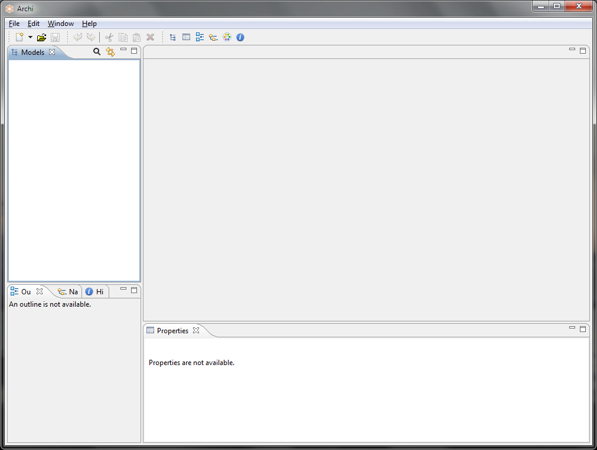
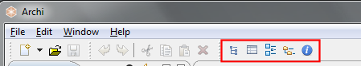

Installing and Launching Archi
Download the required version from http://archi.cetis.ac.uk/download.html
The Windows version is installed by means of an executable installer. Run the installer wizard to install Archi to your system. Windows XP, Windows Vista and Windows 7/8 32-bit and 64-bit versions are supported.
The Mac and Linux versions are packaged in zip and tar.gz files respectively. Simply un-archive the downloaded archive file and double-click the "Archi" application file to launch the program.
Example models
Alongside the Archi installation is an "examples" folder containing a few simple ArchiMate example models. You can open these in Archi from the "Open" menu.
Launching Archi
The new, blank Archi workspace looks like the following:

The Default Archi Workspace
The workspace is divided into the following sub-windows:
- The Models Tree window. By default this is positioned at the top left and labelled "Models". This is where one or more ArchiMate models can be viewed as a tree structure.
- The Properties window. This displays the properties for a selected ArchiMate element. The properties for the selected element can be edited here.
- The Outline window. This window displays the contents of an ArchiMate diagram (View) in miniature as a navigation tool for the selected diagram (View).
- The Navigator window. This window displays the selected model element and all of its relationships with other model elements. It is used to navigate between connected elements via their relationships and is used in conjunction with the Models Tree window.
- The Palette window. When opened will display a single window for the drawing Palette used in Views.
- The Visualiser window. This window displays the selected model element and all of its relationships with other model elements in a graphical way. It is the graphical equivalent of the Navigator.
- The Hints window. This displays short textual hints for the selected object. For example, selecting an ArchiMate "Business Actor" diagram element displays a short summary of that object's meaning and purpose. Selecting an item or hovering over an item, in the diagram's palette also displays a hint in the window.
These sub-windows can be re-arranged by dragging them into new positions, or by dragging them out of the main application window to become detached from the main window.
The various windows may be shown or hidden by selecting the appropriate menu items from the "Window" menu on the main menu bar or from the buttons on the toolbar:

The Windows Toolbar
To reset the Archi window workspace to its default layout, select "Reset Window Layout" from the "Window" menu from the main menu.
You can hide or show the main toolbar by selecting "Hide/Show Toolbar" from the "Window" menu from the main menu.